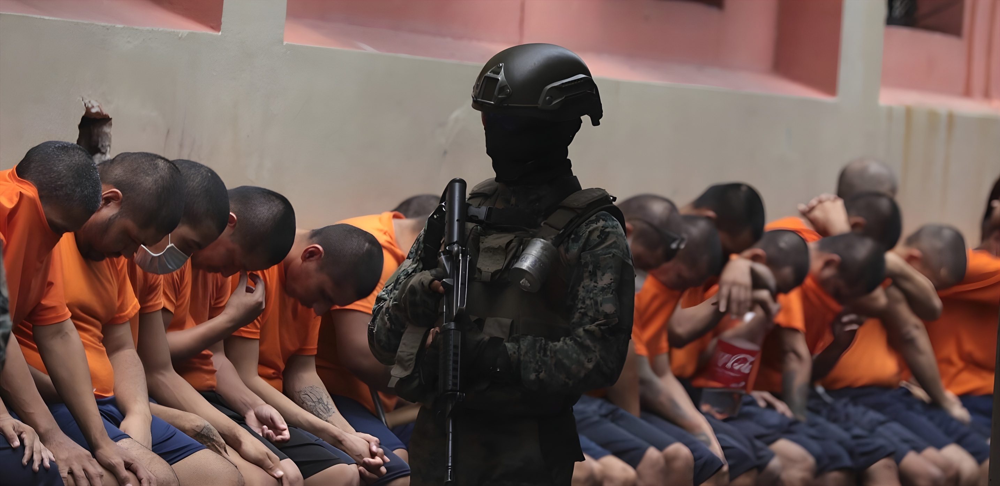

Lancé en mars 2022, le « régime d'exception » de Nayib Bukele a transformé El Salvador en quelques années : le pays autrefois le plus meurtrier du monde affiche désormais l'un des taux d'homicide les plus bas d'Amérique latine. Mais ce miracle sécuritaire repose sur une suspension des libertés fondamentales et une criminalisation de masse qui divisent profondément la communauté internationale.
Lorsque Nayib Bukele prend le pouvoir en juin 2019, El Salvador est l'un des pays les plus dangereux au monde. Les maras — MS-13 et Barrio 18 principalement — contrôlent des pans entiers du territoire, imposant extorsions, recrutements forcés et lois parallèles à des millions de Salvadoriens. Le taux d'homicide atteint 103 pour 100 000 habitants en 2015, un record mondial pour un pays non en guerre déclarée.
Les gouvernements successifs, de gauche comme de droite, ont échoué à démanteler ces structures criminelles, tantôt par la répression aveugle, tantôt par des négociations secrètes — comme la tristement célèbre tregua de 2012, qui avait temporairement réduit les homicides au prix de concessions opaques aux gangs.
Le 27 mars 2022, après un week-end meurtrier (87 homicides en 72 heures revendiqués par les gangs), l'Assemblée nationale salvadorienne — dominée par le parti de Bukele — vote un état d'exception suspendant plusieurs garanties constitutionnelles : droit à un avocat commis d'office, durée maximale de la garde à vue portée à 15 jours, secret des communications levé. Ce régime, initialement prévu pour 30 jours, a été reconduit sans interruption jusqu'en 2026.
L'armée et la police déploient conjointement des opérations de masse dans les quartiers réputés contrôlés par les maras. Des dizaines de milliers de personnes sont arrêtées chaque mois sur la base de présomptions — tatouages, fréquentations, signalements anonymes — sans qu'un tribunal ait préalablement examiné les charges.
Week-end meurtrier (87 morts). Vote du régime d'exception. Premières vagues d'arrestations massives. L'armée investit les quartiers gangréné.
Inauguration du CECOT — Centre de Confinement du Terrorisme — immense complexe pénitentiaire de 40 000 places conçu pour accueillir les membres de gangs.
Le nombre d'incarcérés dépasse 85 000. El Salvador devient le pays au taux d'incarcération le plus élevé du monde (plus de 1 % de la population adulte).
Bukele est réélu avec 83 % des voix dès le premier tour. Malgré les controverses constitutionnelles sur un deuxième mandat consécutif, la Cour Suprême valide sa candidature.
Exportation du modèle : l'Équateur et le Honduras s'inspirent des méthodes salvadoriennes. Trump évoque El Salvador comme exemple à suivre. Négociations pour des extraditions entre gouvernements.
Le taux d'homicide reste historiquement bas (~2–3/100 000). Le régime d'exception est toujours en vigueur. Plus de 7 000 personnes libérées pour insuffisance de preuves, mais plus de 78 000 restent détenues.
L'impact sur la violence est indéniable. El Salvador est passé en moins de trois ans du pays le plus meurtrier du monde à l'un des plus sûrs d'Amérique latine. Le taux d'homicide est tombé de 52 pour 100 000 en 2021 à environ 2–3 en 2023–2024, soit une chute sans équivalent dans l'histoire de la criminologie contemporaine.
| Indicateur | 2021 (avant) | 2024 (après) |
|---|---|---|
| Homicides / 100 000 hab. | 52 | ~2,4 |
| Extorsions signalées | Massives | Quasi-nulles |
| Personnes incarcérées | ~39 000 | ~85 000+ |
| Taux d'approbation Bukele | ~70 % | ~85–90 % |
| Tourisme international | Faible | +60 % (2023) |
Le Centre de Confinement du Terrorisme (CECOT), inauguré en 2022, est devenu l'emblème mondial de la politique de Bukele. Cette méga-prison de 40 000 places — la plus grande d'Amérique — accueille les détenus dans des conditions de sécurité maximale : cellules de masse, privation quasi-totale de lumière naturelle, interdiction des visites familiales. Des images diffusées par le gouvernement salvadorien montrant des centaines de détenus rasés et en uniforme blanc ont fait le tour du monde, à la fois pour leur impact dissuasif revendiqué et leur charge symbolique fortement critiquée.
La politique sécuritaire s'inscrit dans un mouvement plus large de concentration du pouvoir. En 2021, la nouvelle Assemblée nationale dominée par Nuevas Ideas a destitué les juges de la Cour Suprême et le procureur général en une nuit, remplaçant des magistrats indépendants par des proches du président. La même année, une nouvelle loi électorale a réduit la représentation des petits partis et modifié la composition du Congrès à l'avantage du camp présidentiel.
En 2024, Bukele a obtenu sa réélection malgré l'interdiction constitutionnelle des mandats consécutifs — une décision validée par la Cour Suprême qu'il avait lui-même recomposée. Le parlement a également adopté une loi permettant de juger des mineurs comme des adultes dans les affaires de gangs, abaissant l'âge de la responsabilité pénale à 12 ans.
« Nous avons choisi la vie de nos citoyens plutôt que les recommandations des organisations de droits humains. »
— Nayib Bukele, conférence de presse, 2023« Mon fils avait un tatouage de football. Il est en prison depuis dix-huit mois. Personne ne nous dit rien. »
— Mère de détenu, San Salvador, janvier 2024Le « modèle Bukele » est devenu un objet de fascination et de débat bien au-delà des frontières salvadoriennes. L'Équateur de Daniel Noboa a déclaré l'état d'urgence en janvier 2024 et revendique explicitement l'inspiration salvadorienne face aux cartels. Le Honduras a suivi une logique similaire. Aux États-Unis, Donald Trump a affiché son admiration pour Bukele et les deux présidents ont conclu en 2025 un accord controversé permettant l'envoi de déportés américains vers le CECOT.
L'Union européenne et plusieurs agences onusiennes ont en revanche condamné les violations systématiques du droit à un procès équitable, qualifiant le régime d'exception de droit d'exception permanent incompatible avec un État de droit.
El Salvador incarne une tension fondamentale de notre époque : peut-on acheter la sécurité au prix des libertés ? La réduction spectaculaire de la violence est réelle et profondément ressentie par une population qui vivait sous la terreur des gangs. Mais la pérennité de ce résultat est incertaine — les maras ont été brisées, mais leurs structures économiques et leurs réseaux internationaux restent partiellement intacts. Plus profondément, l'érosion de l'État de droit, la justice expéditive et la concentration des pouvoirs dessinent un précédent qui interroge les démocraties latino-américaines : la sécurité physique peut-elle prospérer durablement sur les ruines de la sécurité juridique ?
Lanzado en marzo de 2022, el «régimen de excepción» de Nayib Bukele ha transformado El Salvador en pocos años: el país antaño más violento del mundo exhibe ahora una de las tasas de homicidio más bajas de América Latina. Pero este milagro de seguridad descansa sobre una suspensión de las libertades fundamentales y una criminalización masiva que divide profundamente a la comunidad internacional.
Cuando Nayib Bukele asume el poder en junio de 2019, El Salvador es uno de los países más peligrosos del mundo. Las maras — MS-13 y Barrio 18 principalmente — controlan amplias zonas del territorio, imponiendo extorsiones, reclutamientos forzados y leyes paralelas a millones de salvadoreños. La tasa de homicidios alcanza los 103 por 100 000 habitantes en 2015, un récord mundial para un país que no está en guerra declarada.
Los gobiernos sucesivos, tanto de izquierda como de derecha, fracasaron en desmantelar estas estructuras criminales, ya fuera mediante la represión ciega o mediante negociaciones secretas — como la tristemente célebre tregua de 2012, que redujo temporalmente los homicidios al precio de concesiones opacas a las pandillas.
El 27 de marzo de 2022, tras un fin de semana sangriento (87 homicidios en 72 horas reivindicados por las pandillas), la Asamblea Nacional salvadoreña — dominada por el partido de Bukele — aprueba un estado de excepción que suspende varias garantías constitucionales: derecho a un abogado de oficio, plazo máximo de detención extendido a 15 días, secreto de las comunicaciones levantado. Este régimen, inicialmente previsto para 30 días, ha sido prorrogado ininterrumpidamente hasta 2026.
El ejército y la policía despliegan conjuntamente operaciones masivas en los barrios considerados controlados por las maras. Decenas de miles de personas son detenidas mensualmente en base a presunciones — tatuajes, relaciones sociales, denuncias anónimas — sin que un tribunal haya examinado previamente los cargos.
Fin de semana sangriento (87 muertos). Aprobación del régimen de excepción. Primeras oleadas de arrestos masivos. El ejército ocupa los barrios controlados por pandillas.
Inauguración del CECOT — Centro de Confinamiento del Terrorismo — enorme complejo penitenciario de 40 000 plazas diseñado para albergar a miembros de pandillas.
El número de reclusos supera los 85 000. El Salvador se convierte en el país con la mayor tasa de encarcelamiento del mundo (más del 1 % de la población adulta).
Bukele es reelegido con el 83 % de los votos en primera vuelta. Pese a la controversia constitucional sobre un segundo mandato consecutivo, la Corte Suprema valida su candidatura.
Exportación del modelo: Ecuador y Honduras se inspiran en los métodos salvadoreños. Trump menciona a El Salvador como ejemplo a seguir. Negociaciones de extradición entre gobiernos.
La tasa de homicidios sigue siendo históricamente baja (~2–3/100 000). El régimen de excepción sigue vigente. Más de 7 000 personas liberadas por falta de pruebas, pero más de 78 000 permanecen detenidas.
El impacto sobre la violencia es innegable. El Salvador pasó en menos de tres años de ser el país más violento del mundo a uno de los más seguros de América Latina. La tasa de homicidios cayó de 52 por 100 000 en 2021 a aproximadamente 2–3 en 2023–2024, una caída sin equivalente en la historia de la criminología contemporánea.
| Indicador | 2021 (antes) | 2024 (después) |
|---|---|---|
| Homicidios / 100 000 hab. | 52 | ~2,4 |
| Extorsiones registradas | Masivas | Casi nulas |
| Personas encarceladas | ~39 000 | ~85 000+ |
| Aprobación Bukele | ~70 % | ~85–90 % |
| Turismo internacional | Escaso | +60 % (2023) |
El Centro de Confinamiento del Terrorismo (CECOT), inaugurado en 2022, se ha convertido en el emblema mundial de la política de Bukele. Esta megacárcel de 40 000 plazas — la más grande de América — alberga a los reclusos en condiciones de máxima seguridad: celdas colectivas, privación casi total de luz natural, prohibición de visitas familiares. Las imágenes difundidas por el gobierno salvadoreño mostrando a cientos de detenidos rapados y con uniforme blanco han dado la vuelta al mundo, tanto por su impacto disuasorio declarado como por su carga simbólica ampliamente criticada.
La política de seguridad se inscribe en un movimiento más amplio de concentración del poder. En 2021, la nueva Asamblea Nacional dominada por Nuevas Ideas destituyó a los magistrados de la Corte Suprema y al fiscal general en una noche, sustituyendo a jueces independientes por personas cercanas al presidente. Ese mismo año, una nueva ley electoral redujo la representación de los pequeños partidos y modificó la composición del Congreso en favor del campo presidencial.
En 2024, Bukele obtuvo su reelección pese a la prohibición constitucional de mandatos consecutivos — una decisión avalada por la Corte Suprema que él mismo había recompuesto. El parlamento también aprobó una ley que permite juzgar a menores como adultos en casos de pandillas, reduciendo la edad de responsabilidad penal a 12 años.
« Elegimos la vida de nuestros ciudadanos sobre las recomendaciones de las organizaciones de derechos humanos. »
— Nayib Bukele, conferencia de prensa, 2023« Mi hijo tenía un tatuaje de fútbol. Lleva dieciocho meses preso. Nadie nos dice nada. »
— Madre de detenido, San Salvador, enero de 2024El «modelo Bukele» se ha convertido en objeto de fascinación y debate mucho más allá de las fronteras salvadoreñas. El Ecuador de Daniel Noboa declaró el estado de emergencia en enero de 2024 y reivindica explícitamente la inspiración salvadoreña frente a los cárteles. Honduras siguió una lógica similar. En Estados Unidos, Donald Trump expresó su admiración por Bukele y ambos presidentes firmaron en 2025 un polémico acuerdo que permite el envío de deportados estadounidenses al CECOT.
La Unión Europea y varias agencias de la ONU condenaron en cambio las violaciones sistemáticas del derecho a un juicio justo, calificando el régimen de excepción de derecho de excepción permanente incompatible con un Estado de derecho.
El Salvador encarna una tensión fundamental de nuestra época: ¿se puede comprar seguridad al precio de las libertades? La espectacular reducción de la violencia es real y profundamente sentida por una población que vivía bajo el terror de las pandillas. Pero la durabilidad de este resultado es incierta — las maras han sido desarticuladas, pero sus estructuras económicas y sus redes internacionales permanecen parcialmente intactas. Más profundamente, la erosión del Estado de derecho, la justicia sumaria y la concentración de poderes dibujan un precedente que interpela a las democracias latinoamericanas: ¿puede la seguridad física prosperar durablemente sobre las ruinas de la seguridad jurídica?